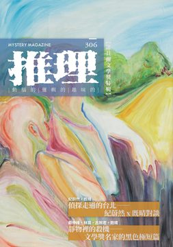

《推理》雜誌於1984年11月由「台灣推理第一人」林佛兒先生創刊，至2008年共發行282期。停刊16年後，由台灣犯罪作家聯會取得獨家授權，於2024年6月復刊，2024年11月推出創刊四十周年紀念專號，並於2025年正式恢復月刊形式發行，2026年持續深化每期的主題企劃，設定了具有閱讀趣味的不同情節故事。 306期主題：「青」。三位諾貝爾桂冠作家在寫犯罪小說時，如何回到類型的規矩底下，再當一次創作生手？另一方面，第九屆林佛兒獎首獎作品正式揭曉，連同整場決審會議的意見與委員評論一起刊出，讀者讀到得獎作，也讀到它被逐條檢驗的過程。「青」，遂成為這兩種狀態的共同名字：名家有生手的一面，新人也要經得起公開討論與評價的過程。 《推理》雜誌長期作為本土作家發表創作的重要園地，也將持續構建更寬廣、完整的月刊文學系統，以經典與創新並行的編輯策略，持續引領台灣犯罪推理的前沿發展！令人引頸期待！ 本期收錄內容如下： ◎封面故事◎ 再會◎顏子耘 畫面把紅與綠、黃與紫這些冷暖互補的顏色並排擺在一起，局部看得出擾動，整體卻揉成溫潤的狀態，過程像拍立得即時顯影。畫中人物把觀者的目光帶向畫面中央，畫的是從「我」漸漸成為「我們」的親密輪廓。 ◎本期動態◎ 真正可怕的不是鬼，而是人心——評〈空屋殺人事件〉◎楓雨 死者的身體同時指向三種死法：心肌梗塞像自然死亡，燒炭像自殺或意外，胸口刀傷又像他殺；三種假設逐一推翻之後，出現的是第四種可能。真正的主題落在房地產利益上：危老重建、凶宅貶值、屋主持分與家庭債務，一個無親無故的流浪漢因此被利益算計選中。 主編紀事◎洪敍銘 「獎項留下的紀錄，是一份被許可的證明。」本期主題原本定名為「獎」，後來改成「青」，指每一個創作者還在成型的那個時刻。作品什麼時候寫成、在哪些年裡有沒有人讀，是另一條少有人注意的時間軸；得獎可以是遲到的追認，作品的起點在更早的時候。 最後的堡壘——評東野圭吾《假面飯店》◎簡君玲 客人來到飯店都戴著名為「顧客」的面具，飯店人員即使看穿也必須尊重；刑警卻認定每個人都是嫌犯，工作就是揭開面具。兩種職人精神在同一棟建築裡交鋒，群像戲裡陸續走進幾對奇怪的客人，作品也因此不只停在單一事件的解謎。 犯罪推理大家觀◎喬齊安 三本書都出自小說比賽。尖端的小說比賽二十年來出了八千子、千晴、李柏青，第三屆大獎作品裡，操縱人心的怪物「魔識」是能借用的力量，說服與洗腦只隔一線；「這本推理小說真厲害！」大賞得主是一部大阪麵包店女學徒的日常之謎；愛倫坡獎新人獎決選的《沉默的告別》，大學生在老人之家聽一名終身監禁的病重老人重述舊案。 ◎主題特輯◎ 偵探走過的台北——紀蔚然 × 既晴 對談◎紀蔚然、既晴；洪敍銘整理 兩位作家各自寫了十幾年的系列偵探：一個從辭去教職、隱居六張犁殯葬街的前教授開始，一個從高雄北上、在徵信社上班的單身男子開始。話題從偵探怎麼誕生？到歐美冷硬派搬到台灣還有什麼可能性？再到台北的街道地圖在小說中的重要性。讀者可以認出這座城市，也能夠真的想去那裡。 【靜物裡的殺機——文學獎名家的黑色極短篇】 極短篇沒有慢慢鋪陳的餘裕，懸念、人性與餘響都得在方寸之間安放；本輯四位作家在散文、劇本、犯罪紀實與大眾小說的獎項裡各有來歷，寫的卻是精巧的、藏在日常縫隙裡的算計、遺棄與掩埋。 右手，那隻右手◎戴伸峰 看守所戒護區內一間朝北的律見室，二〇二〇年三月，心理鑑定專家等了十五分鐘，對面那名編號 0347 的生死辯論庭被告低頭不語，坐在唯一的採光窗前像一座逆光的雕像。會談只剩三分鐘，對方終於開口，給的卻只有一句：「右手！對，就是右手！」那是一樁追撞殺人案，兩具遺體都完整，沒有人少了一隻手。 公主病◎林嵩 工地師傅把薪水幾乎全花在女友身上，牽著她走在街上覺得驕傲，女友卻對他百般嫌棄。某天下午，他正在裝馬桶，診所打來電話：女友麻藥過敏昏迷，手術同意書上的緊急聯絡人寫著他，陪同家屬那一欄的簽名，卻是他不認識的名字。 新糖果屋◎呂婉君 被朋友稱做「人生勝利組」的男人，覺得年邁失智的雙親是家裡兩件逐年不堪用的舊傢俱，必須想一個不著痕跡的清運計畫。第一次帶去大賣場試坐按摩椅，一小時後被好心鄰居送回來；第二次載去客庄老街，兩老說自己坐仙女的凱迪拉克回家。第三次，他買了三張遊艇船票。 月地之夜◎既晴 晚上八點多的土雞城，帆布棚下只有一個客人，桌前排著一列石頭。他是高中地理老師，開一台車全台撿石頭；另一個人得了胃癌，二十年前妻子在水災過後上了一輛陌生人的車，再也沒出現。一個夢把他帶到月世界：寸草不生的惡地閃著微光，妻子的聲音從那片荒地傳來。泥火山土雞上桌，雨幕籠罩了整個月世界。 ◎第九屆林佛兒獎特輯◎ 第九屆決審會議紀要◎白帽子 二〇二六年第九屆林佛兒獎決審，由五位決審委員針對〈扎滿圖釘的屍體〉、〈湯底〉、〈外送員的幸運日〉三篇逐一討論。在地性的界線？真兇該在哪個位置登場？自白在有限篇幅下的鋪陳？五人的意見逐條照錄，兩輪投票後定出首獎。 外送員的幸運日◎猶安 梅雨季的萬華，包租代管的房仲上四樓催代管費，發現鐵門沒關緊，屋主倒在暗紅色地毯上。他沒有報警，用衣角包著門把把門拉回原樣。兩天後，一個二十六歲的外送員從分局走出來，機車和戶頭裡剛存進的三十萬都被查扣，巷口監視器拍到案發前一晚他在那裡待了不尋常的時間。 〈外送員的幸運日〉簡評◎戴伸峰、簡君玲、林暢 三位決審委員各寫了一則簡評。開頭從空間切入：老公寓一樓到四樓的動線，讓讀者像尋寶一樣在虛擬空間裡挖掘；另一則把它與十多年前一本快遞員小說對讀，看當代年輕人的幸福與幸運差在哪裡；最後肯定翻轉設計的完整度與影視改編潛力，並提出若萬華更深入人物命運與核心隱喻，在地性會更無可取代。 ◎本土創作小說◎ 曾雯與海龜◎款款 花蓮的海邊，一名患有自閉症的女大學生每天下課後帶著垃圾袋、長鐵夾與厚手套來淨灘，海龜是她在地球上最愛的生物。從小到大，她從來不把句子講完，因為把話說完整的時候，世界會照著那句話失控。 茄苳公◎林暢 天還沒亮，村裡的老人就坐到那棵四百多年的茄苳樹下，劃火柴點菸，說一聲早。某天早上樹根邊蹲著一個拾荒者，鞋底磨穿，右腳大拇指露在外面，只說了一句這棵樹很老。村口雜貨店老闆說夜裡有一台不是這裡的車開過去；颱風夜，樹的方向傳來一聲悶響。天亮之後，樹上吊著一個人。 少林偵探◎阿華不田 從大陸學中醫回來的女孩帶回一個光頭男友，武校長大的前武僧學員，逃到台灣是為了躲一名糾纏他的富家千金。三個月的停留期限就快到了，兩人忙東忙西沒去登記。影視城的民初劇拍到重頭戲，他扛著女明星衝進搭建的密室，門一關，女明星連台詞都沒說就斷了氣。密室裡只有他一個人，警方鎖定的唯一嫌犯就是這名大陸籍武打替身。 另一種呼吸◎劉哲廷 凌晨兩點到六點的班，「軌跡語言局」第九級語意工程員把觀測衛星的分子資料翻譯成大眾讀得懂的句子：那顆行星含氧、那顆可能有水。某夜一顆環繞紅矮星的行星回傳的光譜裡，二甲基硫的分子輪廓只在畫面上出現不到兩秒，就被歸為低可信度殘影。在地球，那種分子幾乎只由浮游生物釋放。 解密條件◎祁立峰 大學裡的文組系所早已整併成「醫療人文系」，時間是二〇六〇年代，研究生要做的專題是四十年前那場宇宙射線災殃裡爭議不斷的疫苗。審查委員的名單剛解密，九個人幾乎全部聯絡不上；一個同班的學霸從密集書庫的書架縫隙裡鑽出來，說她知道唯一還在世的那位院士隱居在哪裡。 ◎諾貝爾文學名家特輯◎ 贖金 (1937)◎賽珍珠／池水秀譯 收音機播出綁架案的孩子已成屍體的新聞，妻子叫丈夫關掉。他們不算富豪，卻因為家裡的造紙廠而顯眼，兒子明年要上學，兩人在壁爐前把一件不可能發生的事先講定：如果真的遇上，付不付贖金？後來的某個下午，董事會開到一半，電話那頭妻子的聲音像尖叫：小女兒不見了。灌木叢下的石頭壓著一張紙條。 化學的錯誤 (1946)◎威廉・福克納／何去譯 女婿親自打電話給警長，說自己殺了老婆，在岳父家門口迎接警官，先聲明屍體已經抬進屋裡。岳父是全縣出名的暴躁老人，鎖在房裡不肯出來，只從窗後露出一張憤怒的臉。縣檢察官與警長在書房裡對弈般推敲：一個人為什麼要讓自己被關進監獄？隔天清晨，牢房空了。 主客 (1957)◎阿爾貝・卡繆／簡意薇譯 阿爾及利亞高原，十月的一場大雪結束了八個月乾旱，山坡校舍的二十名學生停課。老憲兵騎馬押來一個雙手被綁的阿拉伯人，命令老師隔天把人送到二十公里外的警察總部。老師替囚犯解開繩子，泡薄荷茶，一起吃飯，兩人在同一個房間過夜。「我不會交出他。」老師說。天亮以後，這句話要怎麼算數？ ◎精選翻譯小說◎ 皇家咖啡廳外的騷動 (1898)◎克拉倫斯・魯克／陳典家譯 一八九八年的攝政街，一位帶著美國口音的年輕女子坐馬車緩行，看見皇家咖啡廳門口的騷動便下了車，跟著一個鬍子刮得乾乾淨淨的紳士走進餐廳，坐在他背後那一桌。他點香檳，她喝汽水，寫了一張紙條摺好塞進錢包。門衛清楚看到，那女子的手伸進紳士的外套，從後腰口袋抽出東西。 ◎推理集錦◎ 【犯罪實案現場】南投葡萄催芽劑命案◎艾德嘉 二〇一一年，南投縣信義鄉一戶菜農家擺了一桌菜，請來幫農的一對夫婦吃晚餐，據說還配了一瓶藥酒。隔天清晨四人陸續嘔吐、抽搐、全身弓起，不到一天內先後死亡，嘴角留著怪異的笑。檢警到家裡找不到藥酒，連空瓶都沒有；法醫切下一百多片內臟切片，比對八百多種毒物試劑，才發現死者身上兩毒並存。 【波光衍影】川端康成小說《睡美人》之罪與惡◎衍波 川端康成的《睡美人》裡，鎌倉老作家幾次造訪海邊那間讓熟睡少女與老人共枕的宅子。客觀而言它是一部描寫犯罪的作品：非法用藥、情色服務、施暴、棄屍、逃漏稅。四部改編電影裡，日本導演忠於原著或改編，西方導演直接觸及謀殺，一部改由女大學生的視角看被商品化的問題。 【另眼看劇】《爆彈》◎趙鴻祐 山手線的爆炸案，兇手在偵訊室裡對著被壓制在地、憤怒扭曲的女刑警說出一句讓人作嘔的話，他享受被強烈情感渴求的瞬間。劇評的焦點在這部劇的結構：工整，像兇手的做案美學。三回合的遊戲，最終回沒有揭曉；沒被引爆的那顆，或許是每個角色心裡懸而未解的東西。 【遊戲開始 Games start】《文學偵探事件簿：怪盜懶雲》◎洪敍銘 國立臺灣文學館推出的實境解謎遊戲，把「臺灣新文學之父」賴和的生平與作品改成戶外劇本。必須走到彰化市區才能真正開始，玩家化身文學偵探與助手，調查「賴和面具被盜」的懸案，抵達指定的文學地景或古蹟，用眼前真實的廟宇雕飾、巷弄招牌對照網頁裡的線索。 2026幻華中篇懸疑創作小說獎 2026年9月5日開始徵獎，以中篇（39500-40500字）懸疑小說為徵獎主體，希望能夠提供台灣本土作家發表創作的全新園地。